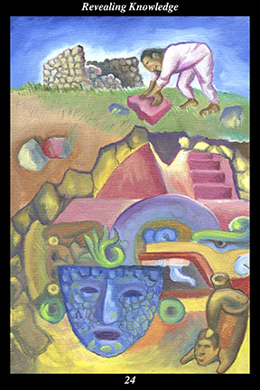

 | IMAGEWhile picking up stones with which to build his home, a male warrior unearths a great treasure from the past. The ancient pyramid buried beneath his field holds precious artifacts and creations from the time of the ancestors.
|
INTERPRETATION
This hexagram depicts the attitude of remaining alert to the ever-present potential for new discoveries. The male warrior symbolizes the masculine creative force, who conceives in order to explore the unknown and uncover the hidden. Clearing the field of stones and using them to build a house means that you turn what others see as useless into a valuable resource. Building a home atop the buried pyramid means that you build your future on the foundation established by the ancestors. Unearthing a treasure trove of the ancestors’ creations in the midst of daily activities means that you experience the extraordinary power of the creative spirit in the midst of ordinary experiences. Taken together, these symbols mean that you are increasingly aware of the unseen forces at work on the transformation of the visible.
ACTION
The masculine half of the spirit warrior roots out preconceptions in order to look at every moment with new eyes. Of all the different kinds of discoveries, the most profound are those that present us with a new and more vital sense of the meaningfulness present in our immediate surroundings. Because being at peace with the world and being content with our life is essential to feeling complete and fulfilled, we long to catch sight of the divine as it continues its work of creation: every time we see the world for the first time, we experience the open heart and open mind as one and are touched to the very core by the loving rays of the perpetual dawn of creation. This is a time for canceling out thoughts of goals or hopes or fears, replacing your preconceptions with a sincere willingness to see the hidden perfection right before your eyes. Likewise, root out any feelings of unworthiness or doubt by purifying the heart of any feelings of envy, resentment, or anger, so that it stands ready to be filled with feelings of relief, joy, and homecoming. Stay vigilant and you will not miss a single opportunity to immerse yourself in the momentous.
INTENT
When you are entrusted with secrets, do not be in a hurry to share them with others. Consider the time and effort you have expended to become trusted—can others gain from your firsthand knowledge if they haven’t had the experience itself? Consider the unexpected and unforeseen nature of the experience—can others gain from your description if the experience cannot be reproduced at will? Consider how your understanding and expression of your experiences always improve over time—can others make lasting gains based on the emotionality of your first impressions? Spend time integrating your vision with everyday life, finding its deeper meanings further and further within the details of ordinary experience. Translate your vision into action, responding to all you encounter with growing consistency and congruity, methodically training your thoughts and emotions and words and deeds to reflect the ancient and secret light you keep in your heart.
SUMMARY
Look more closely at ordinary everyday events and ask yourself what deeper meaning lies concealed within them. Look at the present as being built upon the hidden pyramid of the past and ask yourself what eternal meanings lie concealed just below the surface of your habits and routines. In the midst of your work, a whole new world opens up to you. Follow your sense of wonder.
THE LINE CHANGES
1° Nature reveals knowledge by analogy—you are attuned to the spirit of the land and sky. From the mountains and waters, from the weather and stars, from the plants and seasons, you gain insight into and wisdom about the cycle of creation. You feel more loved by the world every day.
2° Nature reveals knowledge by analogy—you are attuned to the spirit of the animal kingdom. From the intelligence and emotions of animals everywhere, you gain insight into and wisdom about the perfection of life. You grow in compassion and courage every day.
3° Human nature reveals knowledge by intimacy—you are attuned to the spirit of children. From the open-hearted and open-minded nature of children, you gain insight into and wisdom about the way potential can be nurtured or hindered. Your potential for joy increases every day.
4° Human nature reveals knowledge by intimacy—you are attuned to the spirit of companionship. From close and on-going contact with loved ones, you gain insight into and wisdom about the fragility and resiliency of relationships. You are more trusting and trustworthy every day.
5° Spirit reveals knowledge by surprise—you are attuned to the spirit of language. From close observation of the way language shapes perception and reaction, you gain insight into and wisdom about the limits of language. Your sensitivity to the world beyond definitions increases every day.
6° Spirit reveals knowledge by surprise—you are attuned to the spirit of dreams. From close observation of the way dreams change perceptions and reactions, you gain insight into and wisdom about the limits of the senses. Your sensitivity to the invisible and intangible increases every day